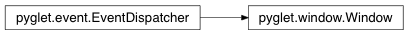

Window Class¶
-
class
Window(width=None, height=None, caption=None, resizable=False, style=None, fullscreen=False, visible=True, vsync=True, display=None, screen=None, config=None, context=None, mode=None)¶ Platform-independent application window.
A window is a “heavyweight” object occupying operating system resources. The “client” or “content” area of a window is filled entirely with an OpenGL viewport. Applications have no access to operating system widgets or controls; all rendering must be done via OpenGL.
Windows may appear as floating regions or can be set to fill an entire screen (fullscreen). When floating, windows may appear borderless or decorated with a platform-specific frame (including, for example, the title bar, minimize and close buttons, resize handles, and so on).
While it is possible to set the location of a window, it is recommended that applications allow the platform to place it according to local conventions. This will ensure it is not obscured by other windows, and appears on an appropriate screen for the user.
To render into a window, you must first call switch_to, to make it the current OpenGL context. If you use only one window in the application, there is no need to do this.
Variables: has_exit – True if the user has attempted to close the window.
Warning
Deprecated. Windows are closed immediately by the default on_close handler when pyglet.app.event_loop is being used.
Methods:
Attributes:
CURSOR_CROSSHAIRCURSOR_DEFAULTCURSOR_HANDCURSOR_HELPCURSOR_NOCURSOR_SIZECURSOR_SIZE_DOWNCURSOR_SIZE_DOWN_LEFTCURSOR_SIZE_DOWN_RIGHTCURSOR_SIZE_LEFTCURSOR_SIZE_LEFT_RIGHTCURSOR_SIZE_RIGHTCURSOR_SIZE_UPCURSOR_SIZE_UP_DOWNCURSOR_SIZE_UP_LEFTCURSOR_SIZE_UP_RIGHTCURSOR_TEXTCURSOR_WAITCURSOR_WAIT_ARROWWINDOW_STYLE_BORDERLESSWINDOW_STYLE_DEFAULTWINDOW_STYLE_DIALOGWINDOW_STYLE_TOOLcaptionThe window caption (title). configA GL config describing the context of this window. contextThe OpenGL context attached to this window. displayThe display this window belongs to. event_typesfullscreenTrue if the window is currently fullscreen. has_exitheightThe height of the window, in pixels. invalidresizeableTrue if the window is resizable. screenThe screen this window is fullscreen in. styleThe window style; one of the WINDOW_STYLE_*constants.visibleTrue if the window is currently visible. vsyncTrue if buffer flips are synchronised to the screen’s vertical retrace. widthThe width of the window, in pixels.
Attributes¶
-
Window.CURSOR_CROSSHAIR= ‘crosshair’¶
-
Window.CURSOR_DEFAULT= None¶
-
Window.CURSOR_HAND= ‘hand’¶
-
Window.CURSOR_HELP= ‘help’¶
-
Window.CURSOR_NO= ‘no’¶
-
Window.CURSOR_SIZE= ‘size’¶
-
Window.CURSOR_SIZE_DOWN= ‘size_down’¶
-
Window.CURSOR_SIZE_DOWN_LEFT= ‘size_down_left’¶
-
Window.CURSOR_SIZE_DOWN_RIGHT= ‘size_down_right’¶
-
Window.CURSOR_SIZE_LEFT= ‘size_left’¶
-
Window.CURSOR_SIZE_LEFT_RIGHT= ‘size_left_right’¶
-
Window.CURSOR_SIZE_RIGHT= ‘size_right’¶
-
Window.CURSOR_SIZE_UP= ‘size_up’¶
-
Window.CURSOR_SIZE_UP_DOWN= ‘size_up_down’¶
-
Window.CURSOR_SIZE_UP_LEFT= ‘size_up_left’¶
-
Window.CURSOR_SIZE_UP_RIGHT= ‘size_up_right’¶
-
Window.CURSOR_TEXT= ‘text’¶
-
Window.CURSOR_WAIT= ‘wait’¶
-
Window.CURSOR_WAIT_ARROW= ‘wait_arrow’¶
-
Window.WINDOW_STYLE_BORDERLESS= ‘borderless’¶
-
Window.WINDOW_STYLE_DEFAULT= None¶
-
Window.WINDOW_STYLE_DIALOG= ‘dialog’¶
-
Window.WINDOW_STYLE_TOOL= ‘tool’¶
-
Window.caption¶ The window caption (title). Read-only.
Type: str
-
Window.config¶ A GL config describing the context of this window. Read-only.
Type: pyglet.gl.Config
-
Window.context¶ The OpenGL context attached to this window. Read-only.
Type: pyglet.gl.Context
-
Window.display¶ The display this window belongs to. Read-only.
Type: Display
-
Window.event_types= [‘on_key_press’, ‘on_key_release’, ‘on_text’, ‘on_text_motion’, ‘on_text_motion_select’, ‘on_mouse_motion’, ‘on_mouse_drag’, ‘on_mouse_press’, ‘on_mouse_release’, ‘on_mouse_scroll’, ‘on_mouse_enter’, ‘on_mouse_leave’, ‘on_close’, ‘on_expose’, ‘on_resize’, ‘on_move’, ‘on_activate’, ‘on_deactivate’, ‘on_show’, ‘on_hide’, ‘on_context_lost’, ‘on_context_state_lost’, ‘on_draw’]¶
-
Window.fullscreen¶ True if the window is currently fullscreen. Read-only.
Type: bool
-
Window.has_exit= False¶
-
Window.height¶ The height of the window, in pixels. Read-write.
Type: int
-
Window.invalid= True¶
-
Window.resizeable¶ True if the window is resizable. Read-only.
Type: bool
-
Window.screen¶ The screen this window is fullscreen in. Read-only.
Type: Screen
-
Window.style¶ The window style; one of the
WINDOW_STYLE_*constants. Read-only.Type: int
-
Window.visible¶ True if the window is currently visible. Read-only.
Type: bool
-
Window.vsync¶ True if buffer flips are synchronised to the screen’s vertical retrace. Read-only.
Type: bool
-
Window.width¶ The width of the window, in pixels. Read-write.
Type: int
Inherited members¶
Methods
Window.register_event_type(name)Register an event type with the dispatcher.
Registering event types allows the dispatcher to validate event handler names as they are attached, and to search attached objects for suitable handlers.
Parameters: name (str) – Name of the event to register.